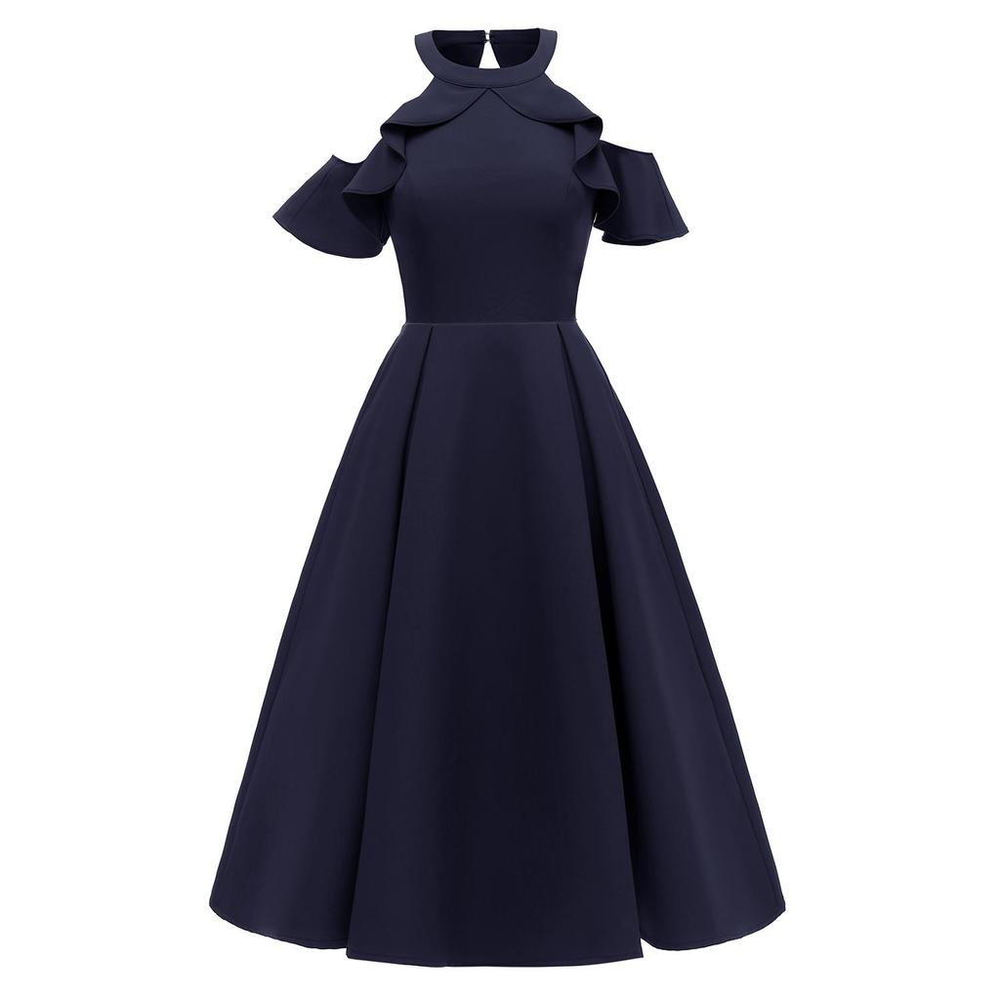
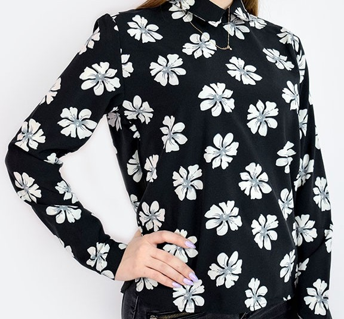
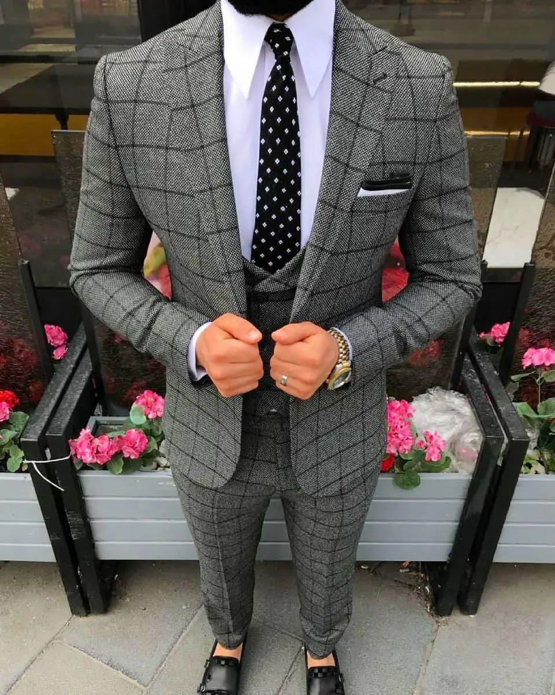
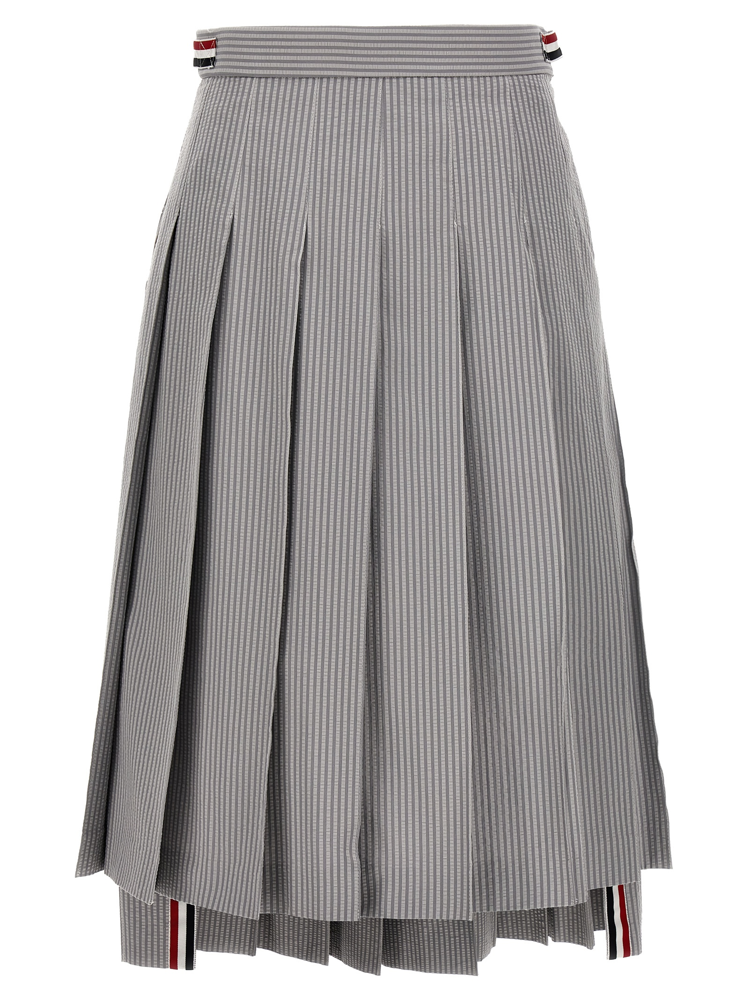
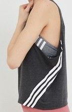
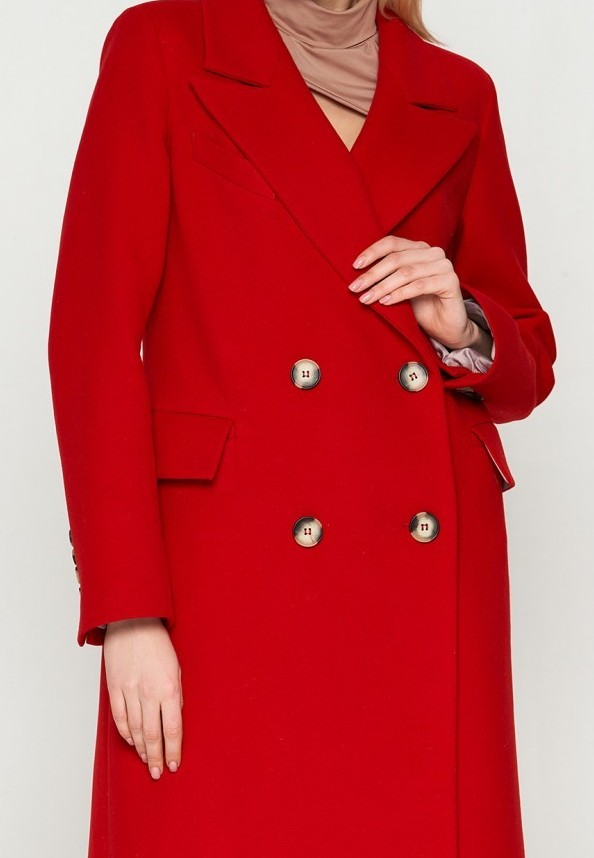
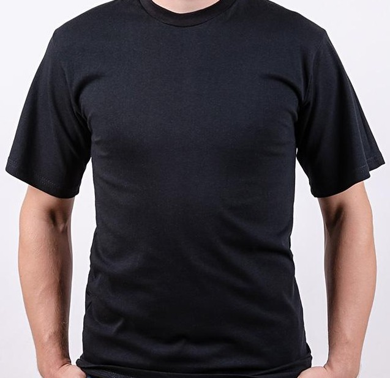
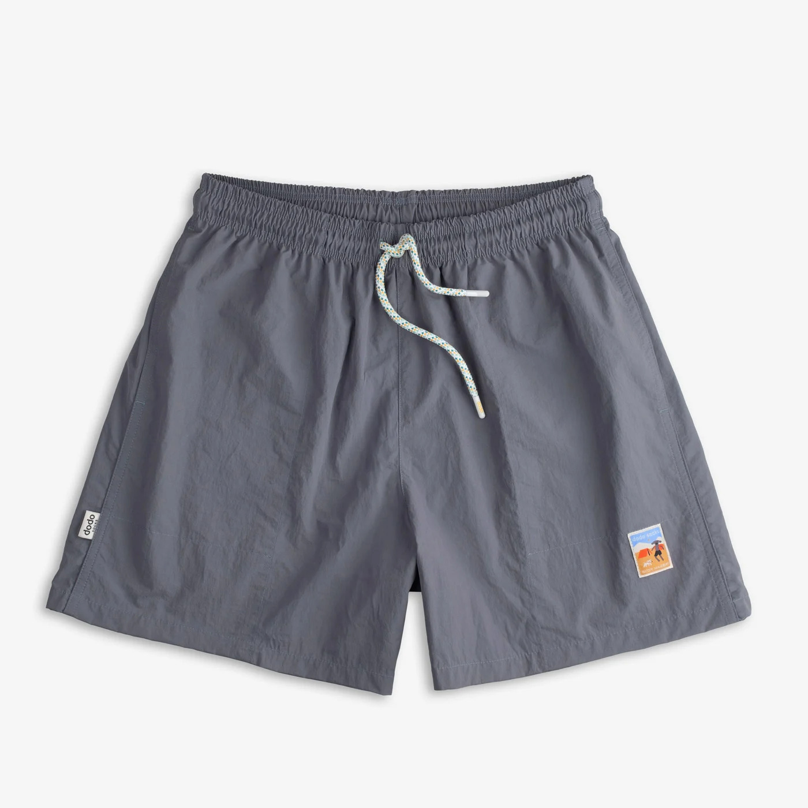
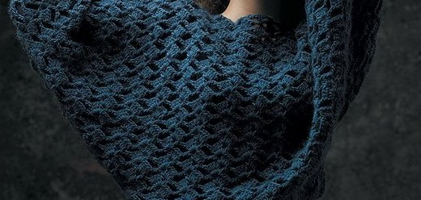

- Cукня вечірня
-

Тип тканини: Шовк
Основні характеристики:- Легка та повітряна структура
- Висока драпірувальність
- Блискуча поверхня
- Зносостійкість
- Приємна на дотик
- Джинси
-

Тип тканини: Денім
Основні характеристики:- Висока міцність
- Різноманітність кольорів
- Комфортна посадка
- Стійкість до зносу
- Легкість у догляді
- Блуза жіноча
-

Тип тканини: Штапель
Основні характеристики:- Легка та м'яка текстура
- Гарна повітропроникність
- Різноманітність фасонів
- Не мнеться
- Ідеально підходить для літнього сезону
- Костюм чоловічий
-

Тип тканини: Вівсяна шерсть
Основні характеристики:- Добра теплоізоляція
- Елегантний вигляд
- Стійкість до зморшок
- Водонепроникність
- Висока міцність швів
- Спідниця плісирована
-

Тип тканини: Поліестер
Основні характеристики:- Легкий догляд
- Стійкість до зносу
- Довговічність кольору
- Чудова форма та структура
- Відмінна драпірувальність
- Топ для тренувань
-

Тип тканини: Спортивний лайкра
Основні характеристики:- Висока еластичність
- Швидке висихання
- Зручний крій
- Стійкість до деформацій
- Додаткова вологопоглинальність
- Пальто жіноче
-

Тип тканини: Вовняна тканина
Основні характеристики:- Чудова теплоізоляція
- Стильний зовнішній вигляд
- Стійкість до шкідливих впливів
- Довговічність
- Різноманітність кольорів і фасонів
- Футболка чоловіча
-

Тип тканини: Бавовна
Основні характеристики:- М'яка та дихаюча структура
- Комфортна для носіння
- Легкість в догляді
- Різноманітні дизайни та кольори
- Стійкість до усадки
- Шорти для відпочинку
-

Тип тканини: Сатин
Основні характеристики:- Легка і гладка текстура
- Приємний на дотик
- Не мнуться
- Хороша вентиляція
- Яскраві кольори
- Светр в'язанний
-

Тип тканини: Акрил
Основні характеристики:- Теплий і легкий
- Висока зносостійкість
- Не викликає алергій
- Легко прати та сушити
- Екологічно чистий матеріал